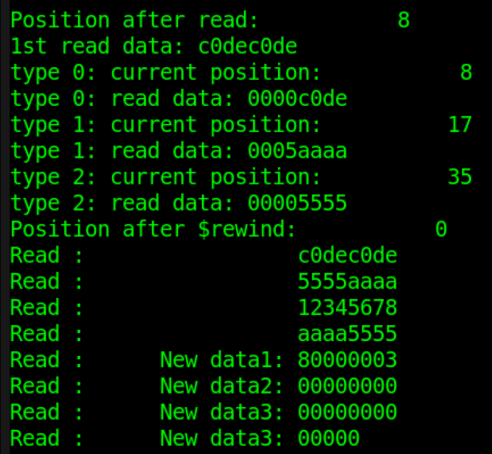
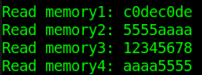

Verilog proporciona muchas tareas de sistema que pueden operar sobre archivos. Las tareas de sistema más utilizadas incluyen principalmente:
- Apertura y cierre de archivos: $fopen, $fclose, $ferror
- Escritura de archivos: $fdisplay, $fwrite, $fstrobe, $fmonitor
- Escritura de cadenas: $sformat, $swrite
- Lectura de archivos: $fgetc, $fgets, $fscanf, $fread
- Posicionamiento de archivos: $fseek, $ftell, $feof, $frewind
- Carga de memoria: $readmemh, $readmemb
Al usar tareas de operación de archivos (preste especial atención a $sforamt, $gets, $sscanf, etc.) para operar sobre archivos, es necesario determinar qué tarea de sistema utilizar según la naturaleza del archivo y el contenido de las variables, y garantizar la coherencia entre los parámetros y los tipos de variables de lectura/escritura con el contenido del archivo. No confunda los tipos de cadena con los tipos de base múltiple.
Apertura/cierre de archivos
| Tarea de sistema | Formato de llamada | Descripción de la tarea |
|---|---|---|
| Apertura de archivo | fd = $fopen("fname", mode) ; | fname es el nombre del archivo que se abre fd es el descriptor de archivo de 32 bits devuelto --- Cuando se abre correctamente, fd es un valor distinto de cero --- Cuando hay un error al abrir, fd es cero mode se utiliza para especificar el modo de apertura del archivo |
| Cierre de archivo | $fclose(fd) ; | Cierra el archivo correspondiente descrito por fd |
| Error de archivo | err = $ferror(fd, str) ; | Al abrir un archivo correctamente: --- err y str son ambos cero, Cuando hay un error al abrir el archivo: --- err devuelve un valor distinto de cero para indicar el error --- str devuelve un valor distinto de cero que almacena el tipo de error --- Se recomienda oficialmente que la longitud de str sea de 640 bits de ancho |
El código de ejemplo es el siguiente:
Ejemplo
integer fd1, fd2 ;
integer err1, err2 ;
reg [320:0] str1, str2 ; //La variable de tipo de error también puede ser del tipo string soportado
initial begin
//existing file
fd1 = $fopen("./DATA_RD.HEX", "r"); //Abrir un archivo existente
err1 = $ferror(fd1, str1);
$display("File1 descriptor is: %h.", fd1 );//Valor distinto de cero
$display("Error1 number is: %h.", err1 ); //0
$display("Error2 info is: %s.", str1 ); //0
$fclose(fd1);
//not existing file
fd2 = $fopen("../../FILE_NOEXIST.HEX", "r");//El archivo que se abre no existe
err2 = $ferror(fd2, str2);
$display("File2 descriptor is: %h.", fd2 ); //0
$display("Error2 number is: %h.", err2 ); //Valor distinto de cero
$display("Error2 info is: %s.", str2 ); //Valor distinto de cero
$fclose(fd2);
end

Los tipos de modo de apertura de archivo y sus descripciones son los siguientes:
| r | Abrir un archivo de texto en modo solo lectura, solo se permiten leer datos. |
|---|---|
| w | Abrir un archivo de texto en modo solo escritura, solo se permiten escribir datos. Si el archivo existe, el contenido original se elimina. Si el archivo no existe, se crea un archivo nuevo. |
| a | Abrir un archivo de texto en modo agregar y escribir datos al final del archivo. Si el archivo no existe, se crea un archivo nuevo. |
| rb | Abrir un archivo binario en modo solo lectura, solo se permiten leer datos. |
| wb | Abrir o crear un archivo binario en modo solo escritura, solo se permiten escribir datos. |
| ab | Abrir un archivo binario en modo agregar y escribir datos al final del archivo. |
| r+ | Abrir un archivo de texto en modo lectura-escritura, permite leer y escribir |
| w+ | Abrir o crear un archivo de texto en modo lectura-escritura, permite leer y escribir. Si el archivo existe, el contenido original se elimina. Si el archivo no existe, se crea un archivo nuevo. |
| a+ | Abrir un archivo de texto en modo lectura-escritura, permite leer y escribir. Si el archivo no existe, se crea un archivo nuevo. La lectura del archivo comienza desde la dirección inicial del archivo; la escritura solo puede ser en modo agregar. |
| rb+ | Abrir un archivo de texto binario en modo lectura-escritura, con funcionalidad similar a "r+". |
| wb+ | Abrir o crear un archivo de texto binario en modo lectura-escritura, con funcionalidad similar a "w+". |
| ab+ | Abrir un archivo de texto binario en modo lectura-escritura, con funcionalidad similar a "a+". |
Escritura de archivos
Las tareas de sistema para escribir archivos incluyen principalmente: $fdisplay, $fwrite, $fstrobe, $fmonitor, así como sus correspondientes tareas de sistema con formato incorporado $fdisplayb, $fdisplayh, $fdisplayo, etc.
| Formato de llamada | Descripción de la tarea |
|---|---|
| $fdisplay(fd, arguments) ; | Escribir en el archivo en orden o bajo condición, con salto de línea automático |
| $fwrite(fd, arguments) ; | Escribir en el archivo en orden o bajo condición, sin salto de línea automático |
| $fstrobe(fd, arguments) ; | Escribir en el archivo de forma strobe después de que la sentencia se ejecute |
| $fmonitor(fd, arguments) ; | Escribir en el archivo siempre que los datos cambien |
En comparación con las tareas de visualización estándar $display, $write, $strobe, $monitor, las tareas de sistema de escritura de archivos requieren especificar adicionalmente el descriptor de archivo fd en el formato de uso; el resto de condiciones de impresión, características de temporización, etc., se mantienen consistentes con sus tareas de visualización correspondientes.
A continuación se muestra un ejemplo de escritura en un archivo utilizando el modo de escritura por adición:
Ejemplo
integer fd ;
integer err, str ;
initial begin
fd = $fopen("./DATA_RD.HEX", "a+"); //Abrir en modo agregar al final
err = $ferror(fd, str);
if (!err) begin
$fdisplay(fd, "New data1: %h", fd) ;
$fdisplay(fd, "New data2: %h", str) ;
$fdisplay(fd, "New data3: %h", err) ;
//$write(fd, "New data3: %h", err) ; //La última línea se imprime sin salto de línea
end
$fclose(fd);
end
Al abrir el archivo DATA_RD.HEX, se puede ver que se han añadido 3 líneas de datos al final del archivo.

Escritura de cadenas
Verilog también proporciona las tareas de sistema $swrite y $sformat para escribir datos en cadenas.
| Formato de llamada | Descripción de la tarea |
|---|---|
| $swrite(reg, list_of_arguments) ; | Escribir cadenas en la variable reg en orden o bajo condición |
| len = $sformat(reg, format_str, arguments) ; | Escribir cadenas en la variable reg según el formato format_str El formato es el mismo que el formato especificado por $display No se recomienda omitir el segundo parámetro format_str Puede devolver la longitud de la cadena len |
El segundo parámetro format de $sformat es de tipo cadena; generalmente se recomienda no omitirlo. Este parámetro especifica el tipo de las variables de entrada; al especificar el tipo también puede incluir otra información de cadena. Para los tipos y su uso, consulte la función de visualización $display. Este parámetro también puede ser de tipo registro, pero se requiere que los datos almacenados sean datos de cadena normales.
Un ejemplo de código para escribir cadenas es el siguiente:
Ejemplo
reg [299:0] str_swrite, str_sformat;
reg [63:0] str_buf ;
integer len, age ;
initial begin
#20 ;
str_buf = "runoob!" ;
age = 9 ;
//$swrite escribe una cadena que contiene variables con formato especificado
$swrite(str_swrite, "%s age is %d", str_buf, age) ;
$display("%s", str_swrite);
//$swrite escribe directamente una cadena que no contiene variables
$swrite(str_swrite, "years ", "old.") ;
$display("%s", str_swrite);
//$swrite escribe una cadena que contiene variables sin especificar formato; no recomendado
$swrite(str_swrite, age) ;
$display("$swrite err test: %d", str_swrite);
$display();
//$sformat escribe una cadena que contiene variables con formato especificado
$sformat(str_sformat, "I have learnt in %s", str_buf) ;
$display("%s", str_sformat);
//$sformat escribe directamente una cadena que no contiene variables y obtiene la longitud de la cadena
len = $sformat(str_sformat, "for 4 years!") ;
$display("%s", str_sformat);
$display("$sformat len: %d", len);
//$sformat escribe directamente varias cadenas sin variables a la vez; no recomendado
$sformat(str_sformat, "for", "4", "years!") ;
$display("$sformat err test: %s", str_sformat);
end
Ignorando los espacios de la información impresa, la salida de depuración es la siguiente:

De esto se deduce que $sformat y $swrite pueden usarse de la misma manera, por ejemplo, $sformat puede escribir una cadena con formato especificado o escribir una sola vez una cadena que no contiene variables. En este caso, $sformat equivale a no especificar el tipo de variable en el segundo parámetro, por lo que el tercer parámetro debe omitirse.
$swrite también puede escribir varias cadenas que no contienen variables a la vez, mientras que $sformat no permite dicha llamada.
También se recomienda especificar el tipo de variable al usar $swrite para escribir cadenas que contienen variables; de lo contrario, el resultado puede ser impredecible.
Lectura de archivos
| Tarea de sistema | Formato de llamada y descripción | |
|---|---|---|
| Leer archivo por caracteres | c = $fgetc( fd ) ; | |
| Muestra los datos de fd a la variable c en formato de carácter; el ancho de bits de c debe ser al menos 8 Cuando hay un error de lectura, el valor de c es EOF(-1); se puede usar $ferror para verificar el tipo de error | ||
| Escribir búfer por carácter | code = $ungetc(c, fd ) ; | |
| Escribe el carácter c en el búfer del archivo fd El valor de c se devuelve en la próxima llamada a $fgetc; el contenido del archivo fd en sí no cambia Cuando la escritura del búfer es normal, el valor de retorno code es 0; cuando ocurre un error, el valor de retorno code es EOF | ||
| Leer archivo por líneas | code = $fgets(str, fd) | |
| Lee caracteres de forma continua hasta que la variable str se llene, o se complete la lectura de una línea, o se llegue al final del archivo En una lectura normal, el valor de retorno code es el número de líneas (veces) leídas; cuando ocurre un error, code es 0 | ||
| Leer archivo según formato | code = $fscanf(fd, format, args) ; | |
| Lee los datos del archivo fd en las variables args según el formato format Para format, consulte la descripción del formato especificado por $display La condición de detención para una lectura es un espacio o un salto de línea Cuando ocurre un error de lectura, el valor de retorno code es 0 | ||
| Leer cadena según formato | code = $sscanf(str, format, args) ; | |
| Según el formato format, lea la variable de tipo cadena str en la variable args directamente a la variable data_get, el contenido en data_get será anómalo. | ||
| Leer archivo en binario | code = $fread(store, fd, start, count) ; | |
| Leer datos del archivo fd en la variable de array o registro store en formato de flujo de datos binarios start es la dirección de inicio del archivo, count es la longitud de lectura Si start/count no se especifican, todos los datos se rellenarán en la variable store Si store es de tipo registro, los parámetros start/count no son válidos, y la lectura se detendrá después de que la variable store se llene una vez con datos |
c0dec0de 5555aaaa 12345678 aaaa5555 New data1: 80000003 New data2: 00000000 New data3: 00000000
Ejemplos de llamada a $fgetc, $ungetc
Ejemplo
integer i ;
reg [31:0] char_buf ;
initial begin
#30 ;
fd = $fopen("DATA_RD.HEX", "r");
$write("Read char: ");
err = $ferror(fd, str);
if (!err) begin
for (i=0; i<13; i++) begin
char_buf[7:0] = $fgetc(fd) ; //Leer por carácter individual
$write("%c", char_buf[7:0]) ; //Imprimir caracteres individuales uno a uno sin salto de línea
end
$write(".\n") ;
end
$ungetc("1", fd) ; //Escribir en el búfer del archivo 3 veces consecutivas
$ungetc("2", fd) ;
$ungetc("3", fd) ;
char_buf[7:0] = $fgetc(fd) ; //read 3
char_buf[15:8] = $fgetc(fd) ; //read 2
char_buf[23:16] = $fgetc(fd) ; //read 1，read buffer end
char_buf[31:24] = $fgetc(fd) ; //read a
$display("Read char after $ungetc: %s", char_buf);
$fclose(fd);
end
Los resultados de la simulación son los siguientes.
Como se puede ver en la figura, los 13 caracteres leídos por $fgetc son correctos, y los caracteres leídos incluyen el salto de línea.
Después de que $ungetc escribe datos de caracteres en el búfer del archivo, se pueden leer los datos de caracteres del búfer del archivo usando $fgetc. La lectura y escritura siguen el principio de primero en entrar, último en salir (FILO, First in Last out), equivalente a un apilamiento. Cuando los datos de caracteres se escriben primero como "123", los datos leídos son "321".
Una vez que el búfer del archivo se ha leído por completo, al volver a leer datos de caracteres, los datos leídos continúan siguiendo la posición de la última lectura del archivo, es decir, el carácter "a" en "a123" del log.
Durante este proceso, el contenido del archivo DATA_RD.HEX no ha cambiado en absoluto.

Ejemplo de llamada a $fgets
Ejemplo
integer code ;
reg [99:0] line_buf [9:0] ;
initial begin
#31 ;
fd = $fopen("DATA_RD.HEX", "r");
err = $ferror(fd, str);
if (!err) begin
for (i=0; i<6; i++) begin //Leer línea por línea en formato de cadena
code = $fgets(line_buf[i], fd) ; //Contiene "\n" al final, se imprimirán 2 líneas
$display("Get line data%d: %s", i, line_buf[i]) ;
end
end
//En visualización hexadecimal, se mostrarán los códigos ASCII correspondientes
$display("Show hex line data%d: %h", 2, line_buf[2]) ;
$display("Show hex line data%d: %h", 4, line_buf[4]) ;
$fclose(fd) ;
end
Los resultados de la simulación son los siguientes.
Los primeros 4 datos de línea se leen y muestran como tipo cadena, y los resultados son normales.
Al leer los datos de la quinta línea del archivo, debido a la limitación de ancho de bits de 100 de la variable line_buf, el contenido del archivo "New data1: 80000003 " necesita dividirse en 2 lecturas para completarse.
Debido a que cada línea termina con un salto de línea "\n", al imprimir con la función $display, aparecerá una línea en blanco adicional.
Al leer como tipo cadena y mostrar los datos en hexadecimal, el contenido de datos correspondiente del archivo no se puede mostrar de forma intuitiva. Por ejemplo, el contenido de la segunda línea no muestra "12345678," sino su código ASCII correspondiente. Por lo tanto, la tarea $fgets lee según el tipo cadena; esto requiere atención.

Ejemplos de llamada a $fscanf, $sscanf
Ejemplo
reg [31:0] data_buf [9:0] ;
reg [63:0] string_buf [9:0] ;
reg [31:0] data_get ;
reg [63:0] data_test ;
initial begin
#32 ;
fd = $fopen("DATA_RD.HEX", "r");
err = $ferror(fd, str);
if (!err) begin
for (i=0; i<4; i++) begin
//Los primeros 4 datos de línea se leen y muestran en hexadecimal
code = $fscanf(fd, "%h", data_buf[i]);
$display("$fscanf read data%d: %h", i, data_buf[i]) ;
end
for (i=4; i<6; i++) begin
//Los últimos 2 datos de línea se leen y muestran como tipo cadena
code = $fscanf(fd, "%s", string_buf[i]);
$display("$fscanf read data%d: %s", i, string_buf[i]) ;
end
end
//(1) La variable fuente data_test de $sscanf es de tipo cadena
data_test = "fedcba98" ;
code = $sscanf(data_test, "%h", data_get);
$display("$sscanf read data0: %h", data_get) ;
//(2) $sscanf: convertir primero la variable fuente data_test en una variable de cadena
code = $sformat(data_test, "%h", data_buf[2]);
code = $sscanf(data_test, "%h", data_get);
//No se recomienda ingresar directamente variables hexadecimales
//code = $sscanf(data_buf[2], "%h", data_get);
$display("$sscanf read data0: %h", data_get) ;
$fclose(fd) ;
end
Los resultados de la simulación son los siguientes.
Usando $fscanf para leer y mostrar el contenido de las primeras 4 líneas del archivo en hexadecimal, y las últimas 2 líneas como tipo cadena, todo es normal.
Al usar $sscanf para leer el contenido del registro fuente y luego transferirlo al registro de destino, el contenido del registro fuente debe ser datos de tipo cadena.
Por ejemplo, al usar $sscanf para transferir el dato hexadecimal data_buf
Si se usa directamente $sscanf para transferir el dato en formato hexadecimal data_buf
Te lo digo en secreto, ¡¡¡entre registros se puede asignar directamente!!!

Ejemplo de llamada a $fread
Ejemplo
reg [71:0] bin_buf [3:0] ; //Cada línea tiene 8 datos de tipo palabra y 1 salto de línea
reg [143:0] bin_reg ;
initial begin
#40 ;
fd = $fopen("DATA_RD.HEX", "r");
err = $ferror(fd, str);
if (!err) begin
code = $fread(bin_buf, fd, 0, 4); //Lectura de tipo array, leer 4 veces
$display("$fread read data %h", bin_buf[0]) ;//Visualización hexadecimal
$display("$fread read data %h", bin_buf[1]) ;
$display("$fread read data %s", bin_buf[2]) ;//Visualización de cadena
$display("$fread read data %s", bin_buf[3]) ;
end
fd = $fopen("DATA_RD.HEX", "r");
code = $fread(bin_reg, fd); //Lectura de registro individual
$display("$fread read data %h", bin_reg) ;
$fclose(fd) ;
end
Los resultados de la simulación son los siguientes.
Cuando $fread lee un archivo en modo binario, la dirección de inicio y la longitud de lectura son parámetros que se establecen para variables de tipo array.
Si el tipo de variable que almacena los datos es de tipo reg no array, solo se realizará una lectura, hasta que la variable de tipo reg se llene por completo.

Posicionamiento de archivos
| Tarea del sistema | Formato de llamada | Descripción de la tarea |
|---|---|---|
| Obtener la posición del archivo | pos = $ftell( fd ) ; | Devuelve el desplazamiento de la posición actual del archivo respecto al inicio del archivo; la dirección inicial es 0 El desplazamiento se mide en unidades de un byte (8 bits) Se usa junto con $fseek |
| Reposicionamiento | code = $fseek(fd, offset, type) ; | Establece la posición de la siguiente entrada o salida del archivo offset es el desplazamiento establecido type es el tipo de operación del desplazamiento --- 0: Establecer la posición en la dirección de desplazamiento --- 1: Establecer la posición en la posición actual más el desplazamiento --- 2: Establecer la posición al final del archivo más el desplazamiento; frecuentemente se usan números negativos para indicar un desplazamiento hacia atrás desde el final del archivo |
| Reposicionamiento sin desplazamiento | code = $rewind( fd ) ; | Equivalente a $fseek( fd, 0, 0); |
| Determinar el final del archivo | code = $feof(fd) ; | Comprobar si se ha llegado al final del archivo Cuando se detecta el final del archivo, el valor de retorno es 1; de lo contrario, es 0 |
El contenido del archivo DATA_RD.HEX se puede representar de la siguiente manera.
Con el salto de línea "\n" como terminador, el tamaño del archivo es: 4x9 + 3x20 = 96 bytes.

El código de prueba de posicionamiento del archivo es el siguiente:
Ejemplo
reg [31:0] data4 ; //La longitud de la variable de registro es de 4 bytes
reg [199:0] str_long ;
integer pos ;
initial begin
#40 ;
fd = $fopen("DATA_RD.HEX", "r");
err = $ferror(fd, str);
if (!err) begin
//first read
code = $fscanf(fd, "%h", data4);//Leer desde la posición 0
pos = $ftell(fd); //Después de leer 8 bytes, la posición es 8, coordenada (0,8)
$display("Position after read: %d", pos) ;
$display("1st read data: %h", data4) ;
//type = 0
code = $fseek(fd, 4, 0) ; //Leer desde la posición 4, coordenada (0,4)
code = $fscanf(fd, "%h", data4); //Detenerse al leer el salto de línea
pos = $ftell(fd); //Después de leer 4 bytes, la posición es 8, coordenada (0,8)
$display("type 0: current position: %d", pos) ;
$display("type 0: read data: %h", data4) ;
//type = 1
code = $fseek(fd, 4, 1) ; //Leer desde la posición 4+9=12, coordenada (1,3)
code = $fscanf(fd, "%h", data4); //Detenerse al leer el salto de línea
pos = $ftell(fd); //Después de leer 5 bytes, la posición es 17, coordenada (1,8)
$display("type 1: current position: %d", pos) ;
$display("type 1: read data: %h", data4) ;
//type = 2
code = $fseek(fd, -(96-31), 2) ; //Leer desde la posición 31, coordenada (3,4)
code = $fscanf(fd, "%h", data4);
pos = $ftell(fd); //Después de leer 4 bytes, la posición es 35, coordenada (3,8)
$display("type 2: current position: %d", pos) ;
$display("type 2: read data: %h", data4) ;
//rewind read
code = $rewind(fd) ;//Volver a apuntar el puntero del archivo al inicio del archivo
pos = $ftell(fd); //En este momento la posición es 0
$display("Position after $rewind: %d", pos) ;
//read all content of file
while (!$feof(fd)) begin
code = $fgets(str_long, fd);
$write("Read : %s", str_long) ;
end
$fclose(fd) ;
end
end
Los resultados de la simulación son los siguientes.
Como se puede ver en la figura, se imprime una línea de datos adicional al final del log. Esto se debe a que el archivo DATA_RD.TXT tiene una línea en blanco al final (el resultado después de una operación de salto de línea). La tarea del sistema $feof no considera esta línea en blanco como final del archivo, por lo que el valor de retorno sigue siendo 0. Pero en realidad esta línea no tiene datos, por lo que los datos leídos son incontrolables.
Para eliminar la influencia del salto de línea en los datos de la última línea del archivo, se puede reemplazar la última tarea del sistema de escritura de archivos $fdisplay del ejemplo de "escritura de archivos" por $write.
En cuanto al resto del log, combinado con los comentarios del código, se puede ver que la simulación es correcta; aquí no se dará una explicación unificada.

Cargar memoria
| Tarea del sistema | Formato de llamada y descripción | |
|---|---|---|
| Cargar archivo hexadecimal | $readmemh("fname", mem, start_addr, finish_addr) | |
| fname es el nombre del archivo de datos mem es una variable de tipo array/memoria start_addr y finish_addr son la dirección de inicio y la dirección de fin, respectivamente start_addr y finish_addr se pueden omitir; en ese caso, la condición de detención de la carga de datos es que la variable de memoria mem se llene por completo, o que el archivo se lea por completo El contenido del archivo solo debe contener caracteres de espacio en blanco (o saltos de línea y espacios), datos binarios o hexadecimales Los comentarios se marcan con "//"; se recomienda usar saltos de línea para separar los datos | ||
| Cargar archivo binario | $readmemb("fname", mem, start_addr, finish_addr) | |
| El formato de uso es el mismo que $readmemb |
El contenido del archivo DATA_WITHNOTE.HEX es el siguiente; cargue el contenido de este archivo en la variable de memoria.

El código de ejemplo es el siguiente:
Ejemplo
reg [31:0] mem_load [3:0] ;
initial begin
#50 ;
$readmemh("./DATA_WITHNOTE.HEX", mem_load);
$display("Read memory1: %h", mem_load[0]) ;
$display("Read memory2: %h", mem_load[1]) ;
$display("Read memory3: %h", mem_load[2]) ;
$display("Read memory4: %h", mem_load[3]) ;
end
Los resultados de la simulación son los siguientes:

Haz clic para compartir notas
<p style="font-size:14px;">¡Las notas deben ser una extensión del contenido de este artículo!</p><br> <p style="font-size:12px;"><a href="../tougao.html" target="_blank">Envío de artículos, haz clic aquí</a></p> <p style="font-size:14px;"><a href="./runoob-user-test-intro.html" target="_blank">Cómo obtener el código de invitación de registro</a></p> <h3 class="text-muted"><i class="fa fa-info-circle" aria-hidden="true"></i> Antes de compartir notas, debes <a href=".." class="runoob-pop">iniciar sesión</a>!</h3> <p><a href="./runoob-user-test-intro.html" target="_blank">Cómo obtener el código de invitación de registro</a></p>